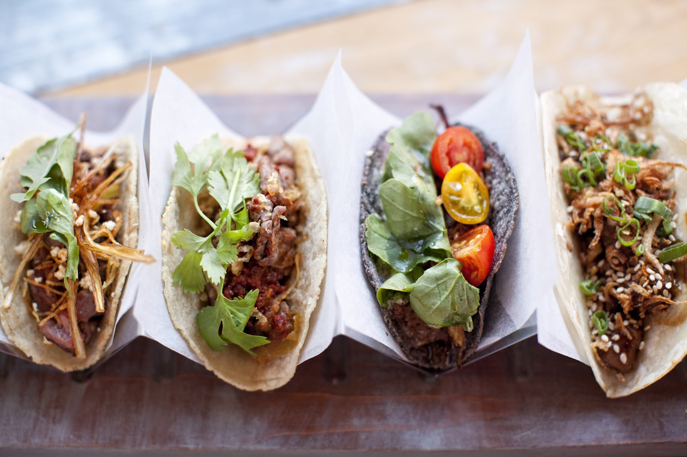

Tacos

Description
Tacos are a Mexican dish made with a soft or crispy tortilla filled with meat, beans, cheese, vegetables, and salsa. They are typically folded and eaten by hand, with popular variations including carne asada, carnitas, and fish.
Globally, tacos are widely enjoyed for their versatility and bold flavors. They are found in street food, restaurants, and home kitchens, adapting to various tastes while retaining their authentic essence. Their popularity comes from the ease of mixing traditional elements with different ingredients.
Ingredients
- Tortillas
- Seasoned meat (e.g., beef, chicken, or pork)
- Salsa
- Cheese
- Onions
- Cilantro
Steps
- Gather Ingredients: Assemble tortillas, meat, toppings, and sauces.
- Prepare the Meat: Cook your choice of meat (e.g., ground beef, chicken) in a skillet over medium heat until fully cooked. Drain excess fat if needed.
- Season the Meat: Add taco seasoning (store-bought or homemade) and water to the cooked meat. Stir well and simmer for a few minutes until thickened.
- Warm the Tortillas: Heat tortillas in a dry skillet for about 30 seconds on each side or wrap them in foil and warm in the oven.
- Assemble the Tacos: Place a portion of the meat mixture on each tortilla.
- Add Toppings: Top with cheese, salsa, onions, cilantro, and any other desired toppings.
- Serve: Enjoy your tacos warm with lime wedges on the side if desired.